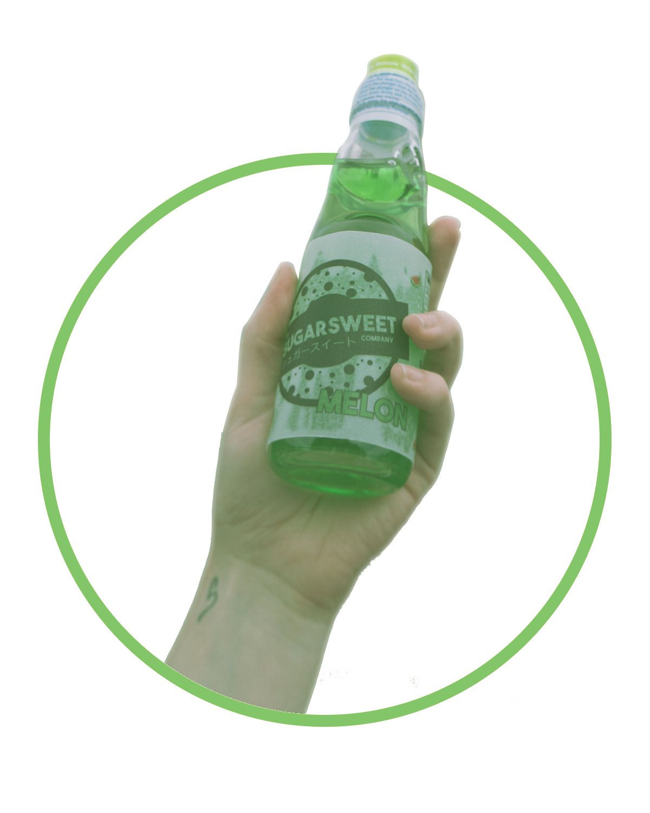
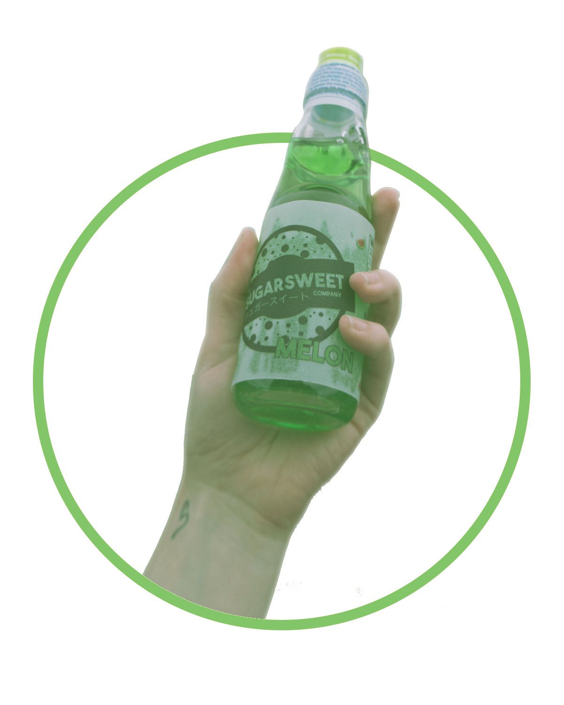
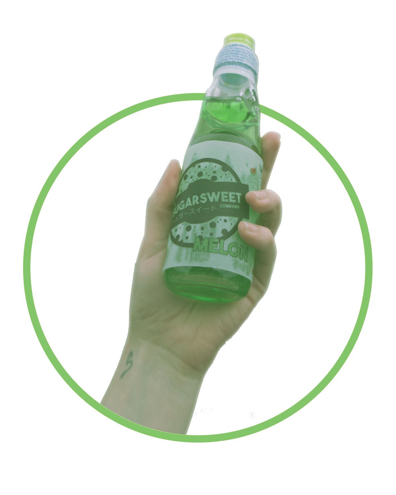

Sugarsweet
The Drink That Goes
Pop
A modern take on a Japanese classic
How To Open it Up
Step 1: Peel the top wrapper
Step 2: Align the green piece to the whole on the cap
Step 3: Put pressure on it to send the marble flying into the soda
Marble Fact - When sealed, the pressure of the carbonated soda pushes the marble against the top to seal it
Marble Fact - It is impossible to get the marble out of the bottle, without smashing it of course, trust me, we've tried

Nutrition Facts Summarized
Who Are We?
contact us


 
